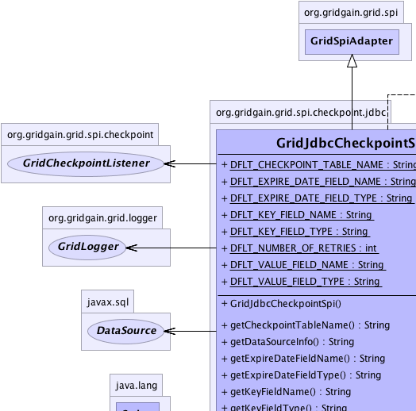
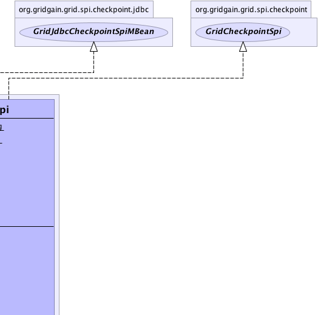
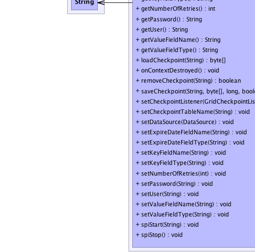
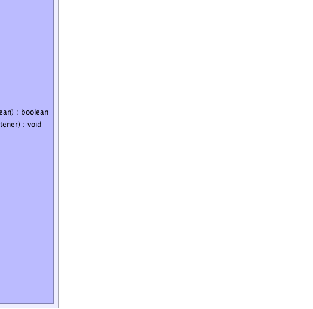

org.gridgain.grid.spi.GridSpiAdapter
org.gridgain.grid.spi.checkpoint.jdbc.GridJdbcCheckpointSpi
org.gridgain.grid.spi.GridSpiAdapter
org.gridgain.grid.spi.checkpoint.jdbc.GridJdbcCheckpointSpi
|
GridGain™ 3.6.0c
Community Edition |
|||||||||
| PREV CLASS NEXT CLASS | FRAMES NO FRAMES | |||||||||
| SUMMARY: NESTED | FIELD | CONSTR | METHOD | DETAIL: FIELD | CONSTR | METHOD | |||||||||
java.lang.Object
@GridSpiInfo(author="GridGain Systems",
url="www.gridgain.com",
email="support@gridgain.com",
version="3.6.0c.13012012")
@GridSpiMultipleInstancesSupport(value=true)
public class GridJdbcCheckpointSpiThis class defines JDBC checkpoint SPI implementation. All checkpoints are stored in the database table and available from all nodes in the grid. Note that every node must have access to the database. The reason of having it is because a job state can be saved on one node and loaded on another (e.g., if a job gets preempted on a different node after node failure).
GridJdbcCheckpointSpi.setDataSource(DataSource)).GridJdbcCheckpointSpi.setCheckpointTableName(String)).GridJdbcCheckpointSpi.setKeyFieldName(String)). GridJdbcCheckpointSpi.setKeyFieldType(String)). GridJdbcCheckpointSpi.setValueFieldName(String)).GridJdbcCheckpointSpi.setValueFieldType(String)).GridJdbcCheckpointSpi.setExpireDateFieldName(String)).GridJdbcCheckpointSpi.setExpireDateFieldType(String)).GridJdbcCheckpointSpi.setNumberOfRetries(int)).GridJdbcCheckpointSpi.setUser(String)).GridJdbcCheckpointSpi.setPassword(String)).Apache DBCP project for more information.
GridJdbcCheckpointSpi can be configured as follows:
GridConfigurationAdapter cfg = new GridConfigurationAdapter();
GridJdbcCheckpointSpi checkpointSpi = new GridJdbcCheckpointSpi();
javax.sql.DataSource ds = ... // Set datasource.
// Set jdbc checkpoint SPI parameters.
checkpointSpi.setDataSource(ds);
checkpointSpi.setUser("test");
checkpointSpi.setPassword("test");
// Override default checkpoint SPI.
cfg.setCheckpointSpi(checkpointSpi);
// Starts grid.
G.start(cfg);
GridJdbcCheckpointSpi can be configured from Spring XML configuration file:
<bean id="grid.custom.cfg" class="org.gridgain.grid.GridConfigurationAdapter" singleton="true">
...
<property name="checkpointSpi">
<bean class="org.gridgain.grid.spi.checkpoint.jdbc.GridJdbcCheckpointSpi">
<property name="dataSrc"><ref bean="anyPooledDataSourceBean" /></property>
<property name="checkpointTableName" value="GRID_CHECKPOINTS" />
<property name="user" value="test" />
<property name="password" value="test" />
</bean>
</property>
...
</bean>

For information about Spring framework visit www.springframework.org
| Wiki | |
| Forum |
|  |  |
|  |  |
| Field Summary | |
|---|---|
static String |
DFLT_CHECKPOINT_TABLE_NAME
Default checkpoint table name (value is CHECKPOINTS). |
static String |
DFLT_EXPIRE_DATE_FIELD_NAME
Default expiration date field name (value is EXPIRE_DATE). |
static String |
DFLT_EXPIRE_DATE_FIELD_TYPE
Default expiration date field type (value is DATETIME). |
static String |
DFLT_KEY_FIELD_NAME
Default checkpoint key field name (value is NAME). |
static String |
DFLT_KEY_FIELD_TYPE
Default checkpoint key field type (value is VARCHAR(256)). |
static int |
DFLT_NUMBER_OF_RETRIES
Default number of retries in case of errors (value is 2). |
static String |
DFLT_VALUE_FIELD_NAME
Default checkpoint value field name (value is VALUE). |
static String |
DFLT_VALUE_FIELD_TYPE
Default checkpoint value field type (value is BLOB). |
| Constructor Summary | |
|---|---|
GridJdbcCheckpointSpi()
|
|
| Method Summary | |
|---|---|
String |
getCheckpointTableName()
Gets checkpoint table name. |
String |
getDataSourceInfo()
Gets data source description. |
String |
getExpireDateFieldName()
Gets expiration date field name for checkpoint table. |
String |
getExpireDateFieldType()
Gets expiration date field type for checkpoint table. |
String |
getKeyFieldName()
Gets key field name for checkpoint table. |
String |
getKeyFieldType()
Gets key field type for checkpoint table. |
int |
getNumberOfRetries()
Gets number of retries in case of DB failure. |
String |
getPassword()
Gets checkpoint jdbc password. |
String |
getUser()
Gets checkpoint jdbc user name. |
String |
getValueFieldName()
Gets value field name for checkpoint table. |
String |
getValueFieldType()
Gets value field type for checkpoint table. |
byte[] |
loadCheckpoint(String key)
Loads checkpoint from storage by its unique key. |
void |
onContextDestroyed()
Callback invoked prior to stopping grid before SPI context is destroyed. |
boolean |
removeCheckpoint(String key)
This method instructs the checkpoint provider to clean saved data for a given key. |
boolean |
saveCheckpoint(String key,
byte[] state,
long timeout,
boolean overwrite)
Saves checkpoint to the storage. |
void |
setCheckpointListener(GridCheckpointListener lsnr)
Sets the checkpoint listener. |
void |
setCheckpointTableName(String tblName)
Sets checkpoint table name. |
void |
setDataSource(DataSource dataSrc)
Sets DataSource to use for database access. |
void |
setExpireDateFieldName(String expDateName)
Sets checkpoint expiration date field name. |
void |
setExpireDateFieldType(String expDateType)
Sets checkpoint expiration date field type. |
void |
setKeyFieldName(String keyName)
Sets checkpoint key field name. |
void |
setKeyFieldType(String keyType)
Sets checkpoint key field type. |
void |
setNumberOfRetries(int retryNum)
Sets number of retries in case of any database errors. |
void |
setPassword(String password)
Sets checkpoint database password. |
void |
setUser(String user)
Sets checkpoint database user name. |
void |
setValueFieldName(String valName)
Sets checkpoint value field name. |
void |
setValueFieldType(String valType)
Sets checkpoint value field type. |
void |
spiStart(String gridName)
This method is called to start SPI. |
void |
spiStop()
This method is called to stop SPI. |
| Methods inherited from class org.gridgain.grid.spi.GridSpiAdapter |
|---|
assertParameter, checkConfigurationConsistency, configInfo, createSpiAttributeName, getAuthor, getConsistentAttributeNames, getGridGainHome, getLocalNodeId, getName, getNodeAttributes, getSpiContext, getStartTimestamp, getStartTimestampFormatted, getUpTime, getUpTimeFormatted, getVendorEmail, getVendorUrl, getVersion, injectables, onContextInitialized, registerMBean, setJson, setName, startInfo, startStopwatch, stopInfo, unregisterMBean |
| Methods inherited from class java.lang.Object |
|---|
clone, equals, finalize, getClass, hashCode, notify, notifyAll, toString, wait, wait, wait |
| Methods inherited from interface org.gridgain.grid.spi.GridSpi |
|---|
getName, getNodeAttributes, onContextInitialized |
| Methods inherited from interface org.gridgain.grid.spi.GridSpiManagementMBean |
|---|
getAuthor, getGridGainHome, getLocalNodeId, getName, getStartTimestamp, getStartTimestampFormatted, getUpTime, getUpTimeFormatted, getVendorEmail, getVendorUrl, getVersion |
| Field Detail |
|---|
public static final int DFLT_NUMBER_OF_RETRIES
2).
public static final String DFLT_EXPIRE_DATE_FIELD_TYPE
DATETIME).
public static final String DFLT_EXPIRE_DATE_FIELD_NAME
EXPIRE_DATE).
public static final String DFLT_VALUE_FIELD_TYPE
BLOB).
public static final String DFLT_VALUE_FIELD_NAME
VALUE).
public static final String DFLT_KEY_FIELD_TYPE
VARCHAR(256)).
public static final String DFLT_KEY_FIELD_NAME
NAME).
public static final String DFLT_CHECKPOINT_TABLE_NAME
CHECKPOINTS).
| Constructor Detail |
|---|
public GridJdbcCheckpointSpi()
| Method Detail |
|---|
public int getNumberOfRetries()
getNumberOfRetries in interface GridJdbcCheckpointSpiMBeanpublic String getDataSourceInfo()
getDataSourceInfo in interface GridJdbcCheckpointSpiMBeanpublic String getUser()
getUser in interface GridJdbcCheckpointSpiMBeanpublic String getPassword()
getPassword in interface GridJdbcCheckpointSpiMBeanpublic String getCheckpointTableName()
getCheckpointTableName in interface GridJdbcCheckpointSpiMBeanpublic String getKeyFieldName()
getKeyFieldName in interface GridJdbcCheckpointSpiMBeanpublic String getKeyFieldType()
getKeyFieldType in interface GridJdbcCheckpointSpiMBeanpublic String getValueFieldName()
getValueFieldName in interface GridJdbcCheckpointSpiMBeanpublic String getValueFieldType()
getValueFieldType in interface GridJdbcCheckpointSpiMBeanpublic String getExpireDateFieldName()
getExpireDateFieldName in interface GridJdbcCheckpointSpiMBeanpublic String getExpireDateFieldType()
getExpireDateFieldType in interface GridJdbcCheckpointSpiMBean@GridSpiConfiguration(optional=false) public void setDataSource(DataSource dataSrc)
Apache DBCP project provides various wrappers
for data sources and connection pools. You can use these wrappers as Spring beans to configure
this SPI from Spring configuration file. Refer to Apache DBCP project for more information.
dataSrc - DataSource object to set.@GridSpiConfiguration(optional=true) public void setNumberOfRetries(int retryNum)
GridJdbcCheckpointSpi.DFLT_NUMBER_OF_RETRIES.
retryNum - Number of retries in case of any database errors.@GridSpiConfiguration(optional=true) public void setUser(String user)
user and password are set.
user - Checkpoint database user name to set.GridJdbcCheckpointSpi.setPassword(String)@GridSpiConfiguration(optional=true) public void setPassword(String password)
user and password are set.
password - Checkpoint database password to set.GridJdbcCheckpointSpi.setUser(String)@GridSpiConfiguration(optional=true) public void setCheckpointTableName(String tblName)
GridJdbcCheckpointSpi.DFLT_CHECKPOINT_TABLE_NAME is used.
tblName - Checkpoint table name to set.@GridSpiConfiguration(optional=true) public void setKeyFieldName(String keyName)
GridJdbcCheckpointSpi.DFLT_KEY_FIELD_NAME is used. Note that you may also want to
change key field type (see GridJdbcCheckpointSpi.setKeyFieldType(String)).
keyName - Checkpoint key field name to set.@GridSpiConfiguration(optional=true) public void setKeyFieldType(String keyType)
VARCHAR, for example).
By default GridJdbcCheckpointSpi.DFLT_EXPIRE_DATE_FIELD_TYPE is used.
keyType - Checkpoint key field type to set.@GridSpiConfiguration(optional=true) public void setValueFieldName(String valName)
GridJdbcCheckpointSpi.DFLT_VALUE_FIELD_NAME
is used. Note that you may also want to change the value type
(see GridJdbcCheckpointSpi.setValueFieldType(String)).
valName - Checkpoint value field name to set.@GridSpiConfiguration(optional=true) public void setValueFieldType(String valType)
BLOB type, and the default value of GridJdbcCheckpointSpi.DFLT_VALUE_FIELD_TYPE, which is
BLOB, won't work for all databases. For example, if using HSQL DB,
then the type should be longvarbinary.
valType - Checkpoint value field type to set.@GridSpiConfiguration(optional=true) public void setExpireDateFieldName(String expDateName)
GridJdbcCheckpointSpi.DFLT_EXPIRE_DATE_FIELD_NAME is used. Note that you may also
want to change the expiration date field type
(see GridJdbcCheckpointSpi.setExpireDateFieldType(String)).
expDateName - Checkpoint expiration date field name to set.@GridSpiConfiguration(optional=true) public void setExpireDateFieldType(String expDateType)
GridJdbcCheckpointSpi.DFLT_EXPIRE_DATE_FIELD_TYPE is used. The field should have
corresponding SQL DATETIME type.
expDateType - Checkpoint expiration date field type to set.
public void spiStart(String gridName)
throws GridSpiException
spiStart in interface GridSpiGridSpiException - Throws in case of any error during SPI start.gridName - Name of grid instance this SPI is being started for
(null for default grid).
public void spiStop()
throws GridSpiException
Note that this method can be called at any point including during recovery of failed start. It should make no assumptions on what state SPI will be in when this method is called.
spiStop in interface GridSpiGridSpiException - Thrown in case of any error during SPI stop.public void onContextDestroyed()
If GridSpiAdapter is used for SPI implementation, then it will
replace actual context with dummy no-op context which is usually good-enough
since grid is about to shut down.
onContextDestroyed in interface GridSpionContextDestroyed in class GridSpiAdapter
public byte[] loadCheckpoint(String key)
throws GridSpiException
loadCheckpoint in interface GridCheckpointSpiGridSpiException - Thrown in case of any error while loading
checkpoint data. Note that in case when given key is not
found this method will return null.key - Checkpoint key.
null if there is no data for a given
key.public boolean removeCheckpoint(String key)
key.
removeCheckpoint in interface GridCheckpointSpikey - Key for the checkpoint to remove.
true if data has been actually removed, false
otherwise.
public boolean saveCheckpoint(String key,
byte[] state,
long timeout,
boolean overwrite)
throws GridSpiException
saveCheckpoint in interface GridCheckpointSpiGridSpiException - Thrown in case of any error while saving
checkpoint data.key - Checkpoint unique key.state - Saved data.timeout - Every intermediate data stored by checkpoint provider
should have a timeout. Timeout allows for effective resource
management by checkpoint provider by cleaning saved data that are not
needed anymore. Generally, the user should choose the minimum
possible timeout to avoid long-term resource acquisition by checkpoint
provider. Value 0 means that timeout will never expire.overwrite - Whether or not overwrite checkpoint if it already exists.
true if checkpoint has been actually saved, false otherwise.public void setCheckpointListener(GridCheckpointListener lsnr)
setCheckpointListener in interface GridCheckpointSpilsnr - The listener to set or null.
|
GridGain™ 3.6.0c
Community Edition |
|||||||||
| PREV CLASS NEXT CLASS | FRAMES NO FRAMES | |||||||||
| SUMMARY: NESTED | FIELD | CONSTR | METHOD | DETAIL: FIELD | CONSTR | METHOD | |||||||||
|
GridGain - Real Time Big Data
|
|

|
|